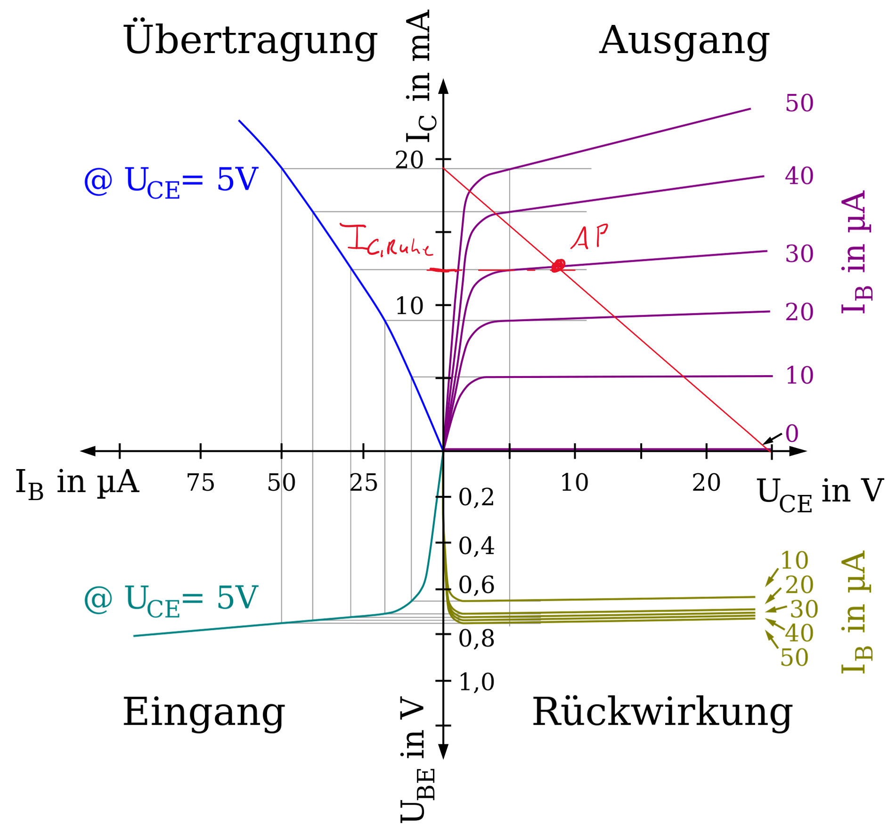
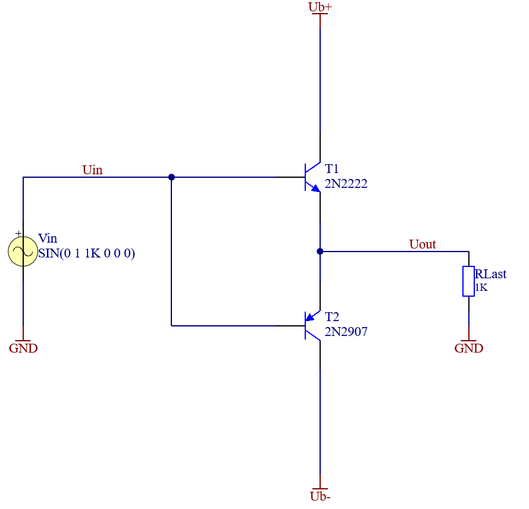
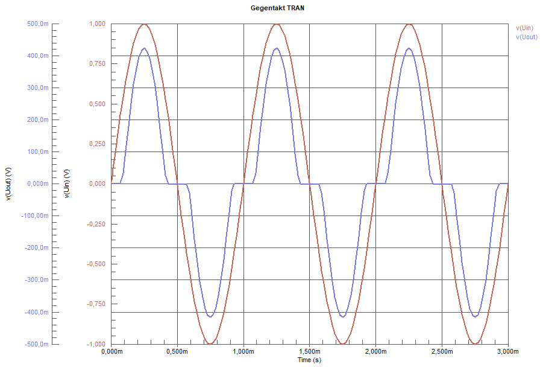
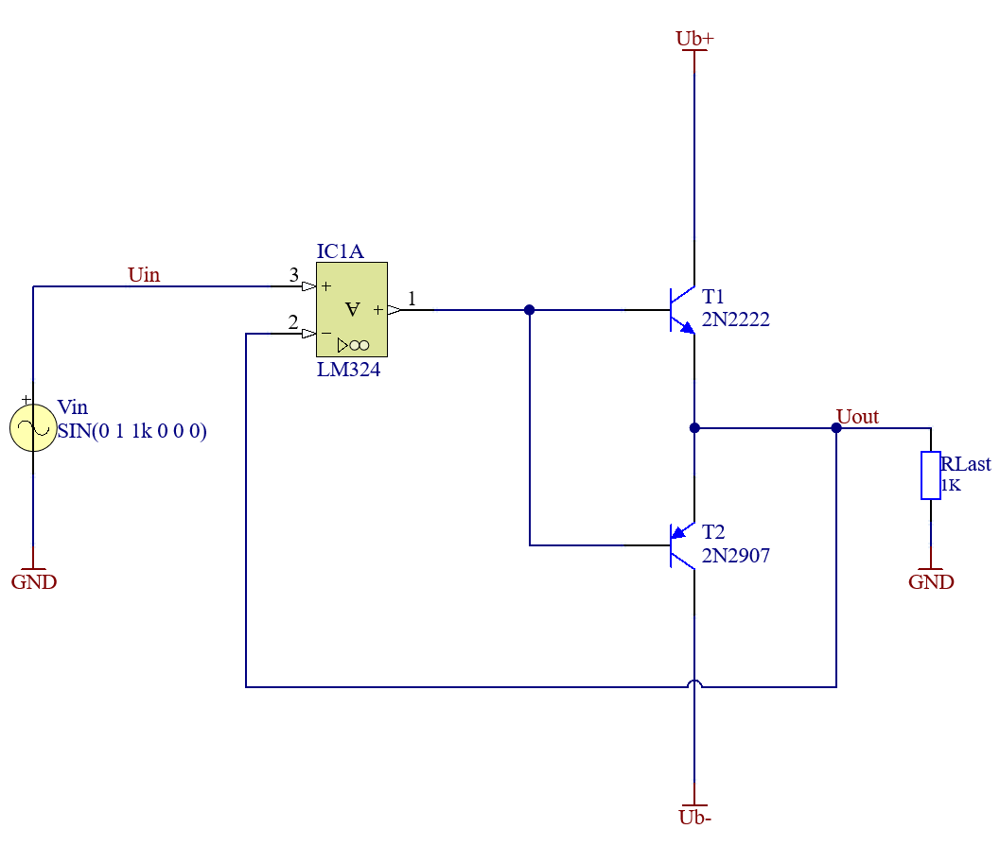
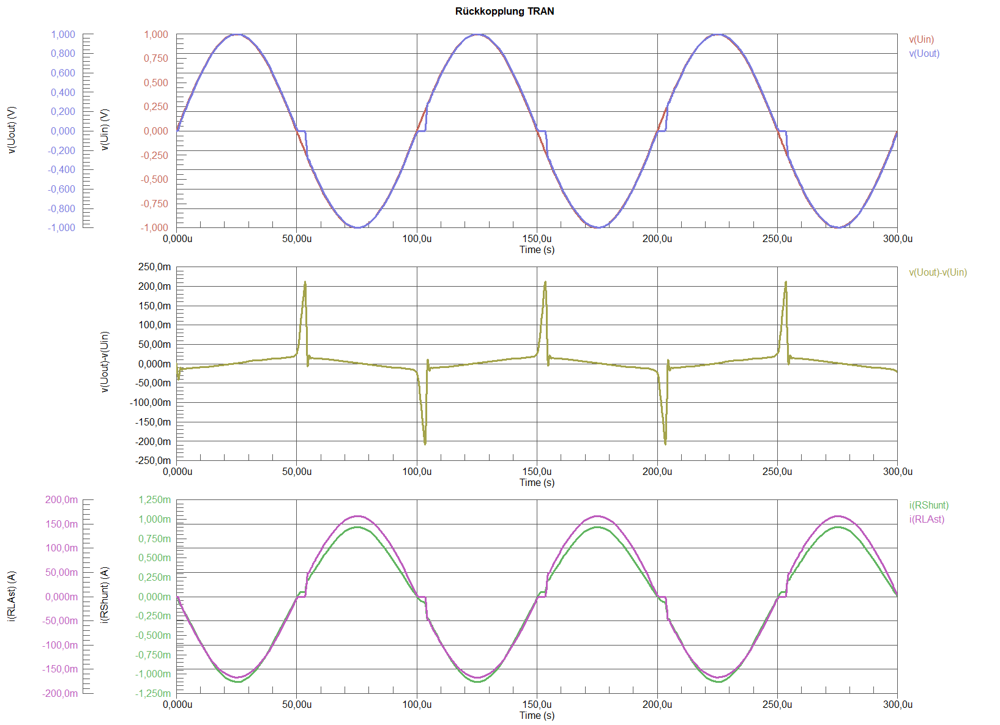
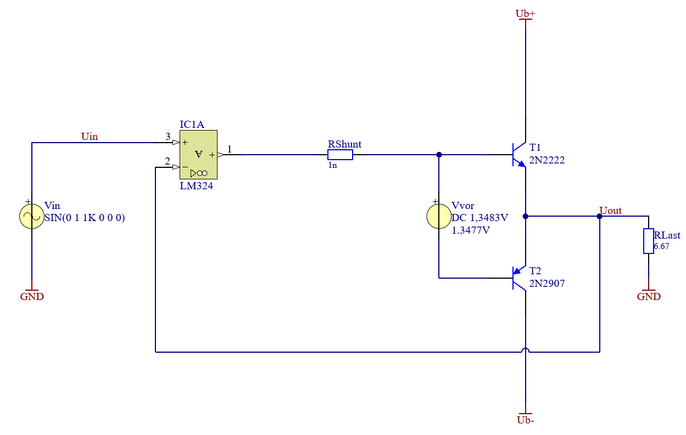
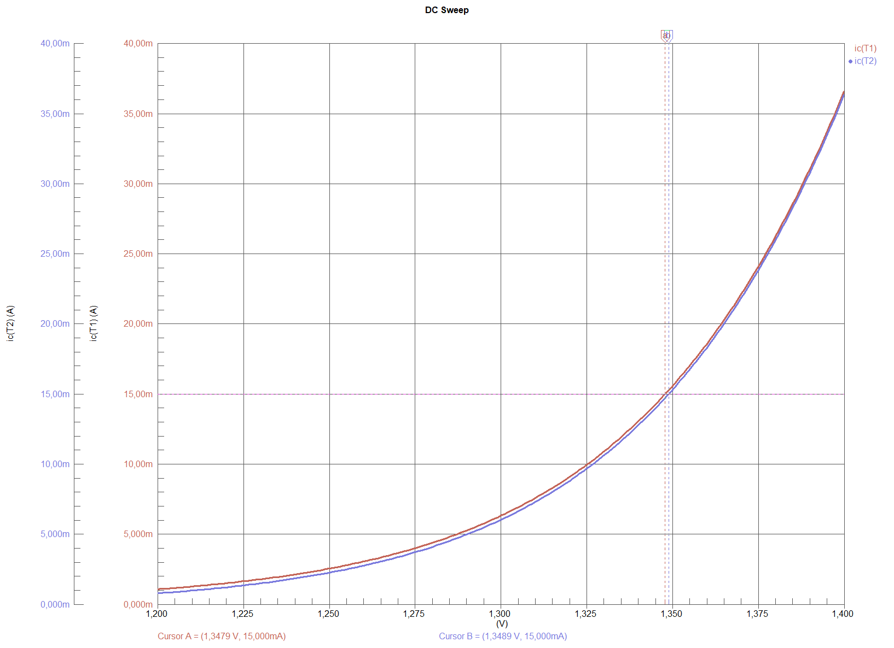
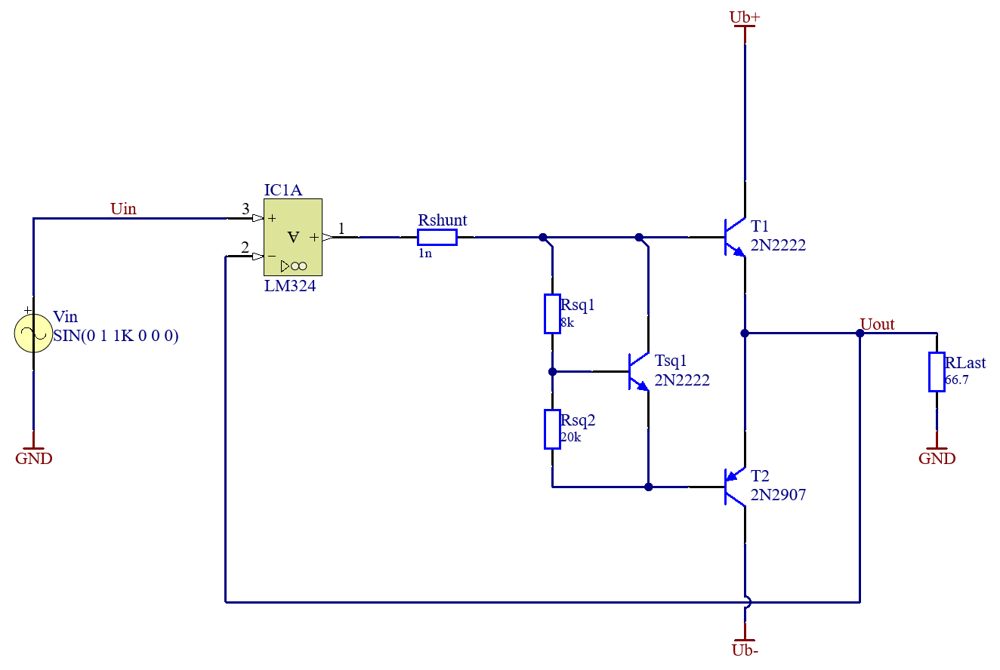
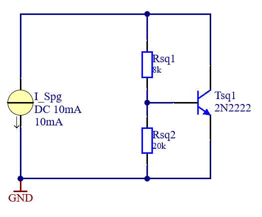
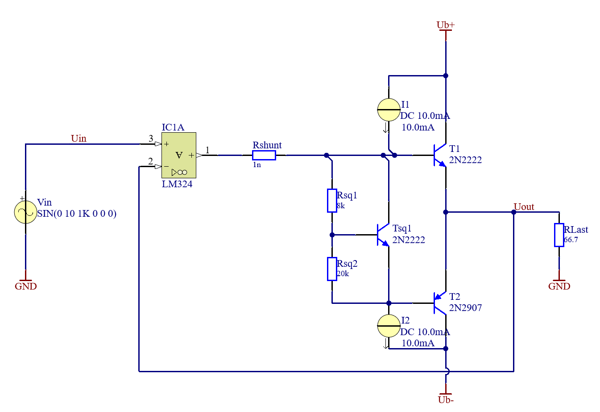

1 Die Projekte
1.1 Leistungsverstärker
Transistorverstärker, wie sie bisher bekannt sind ?sec-BJT, in denen ein Transistor in einem Arbeitspunkt betrieben wird, haben bei höheren Leistungen eine zu hohe Verlustleistung. Die Verlustleistung ist proportional zum Strom durch den Kollektor \(I_C\) in Ruhe, also ohne Signal am Eingang. Bei der Emitterschaltung ist der Ruhestrom höher, da der Arbeitspunkt auf der Kennlinie weiter “oben” ist. Diese Betriebsart wird auch A - Betrieb genannt.

Um höhere Leistungen und eine geringere Verlustleistung zu erreichen, muss der Arbeitspunkt nach “unten” also zu einem kleineren \(I_C\) gebracht werden. Wird dies am Beispiel des Verstärkers in Emittergrundschaltung ?sec-BJT gemacht, würde das bedeuten, dass nur noch eine Halbwelle verstärkt wird. Um dies zu verhindern, werden ein PNP und ein NPN Transistor in Gegentakt geschaltet. Jeder Transistor übernimmt nun die Verstärkung einer Halbewelle. Warum der \(I_C\), und damit die Verlustleistung, trotzdem nicht ganz Null sein kann, sehen wir im folgenden Teil.
1.1.1 Die Gegentaktendstufe
Um zu vermeiden, dass der Arbeitspunkt eine höhere Verlustleistung aufgrund eines höheren \(I_C\) verursacht, und trotzdem ein symmetrisches Signal verstärkt werden kann, können zwei Transistoren eingesetzt werden. Damit ist auch die maximale Leistung höher, da der Arbeitsbereich pro Transistor besser ausgenutzt wird. Ein Transistor verstärkt die positiven Signale. Der andere die negativen. Dies wird Gegentaktendstufe genannt und die die Betriebsart wird als B bezeichnet. Wird eine reale Schaltung entwickelt ist stets darauf zu achten, dass die Bauteileigenschaften berücksichtigt werden. Speziell die Maximalwerte dürfen nicht überschritten werden.

Wird diese Schaltung einem Test unterzogen zeigt sich, dass das Ergebnis wenig zufriedenstellend ist. Weder wird die Amplitude erreicht, das Signal wird gedämpft, noch folgt der Ausgang dem sinuiden Verlauf des Eingangs. Speziell an den Nulldurchgängen gibt es beträchtliche Verzerrungen. Als Qualitätskriterium soll von nun an die Differenz zwischen Ausgangsspannung und Eingangsspannung herangezogen werden.

| Simulationsparameter | Wert | Bemerkung |
|---|---|---|
| Vin Frequenz | 1 kHz | |
| Vin Amplitude | 1 V | |
| Simulierte Perioden | 3 |
1.1.2 Rückkopplung
Um den Verlauf der Ausgangsspannung an den Verlauf der Eingangsspannung anzupassen, wird eine Gegenkopplung verwendet. Dazu ist eine Subtraktion des Ausgangssignals vom Eingangssignal notwendig. Als Transistorschaltung würde sich eine Differenzverstärkerschaltung anbieten. Für ein noch besseres Ergebnis wird hier ein OPV eingesetzt. Durch die Rückkopplung der gesamten Ausgangsspannung wird eine Spannungsverstärkung von Eins erreicht. Das Ausgangssignal folgt dem Eingangssignal. Eine legitime Frage ist, warum nicht einfach nur der OPV verwendet wird? Hier kann auf die Überschrift verwiesen werden. Es soll Leistung verstärkt werden. Und die Ausgangsleistung eines OPV reicht in der Regel nicht aus um beispielsweise Lautsprecher zu betreiben.

Mittels Simulation kann nun erneut die Qualität überprüft werden. Es ist zu erkennen, dass die Amplitude erreicht wird. An den Nulldurchgängen sind jedoch noch Störungen zu sehen. Die Ursache dieser Störungen sind die Kennlinien der Transistoren. In Abbildung Abbildung 1.1 lässt sich erkennen, dass sich in der Nähe des Ursprunges ein Knick befindet. Erst ab einer \(U_{BE} \ \) größer von ca. \(0,7 \ \mathrm{V}\) beginnt der Transistor zu leiten. Das bedeutet, dass Eingangssignale kleiner als diese minimal notwendige Basis- Emitterspannung nicht verstärkt werden.
Der OPV wirkt zwar auch den Übergabeverzerrungen entgegen, allerdings ist er stark abhängig von der Frequenz. Je schneller im Verhältnis zum Signal der OPV sein Ausgangssignal ändern kann, umso kleiner sind die Verzerrungen. Wie schnell der OPV seinen Ausgang ändern kann, hängt von der Slew-Rate mit der Einheit \(\mathrm{\frac{V}{s}}\) ab.

| Simulationsparameter | Wert | Bemerkung |
|---|---|---|
| Vin Frequenz | 10 kHz | |
| Vin Amplitude | 1 V | |
| Simulierte Perioden | 3 |
1.1.3 Vorspannen
Um die Übergabeverzerrungen zu eliminieren wird die B-E Strecke vorgespannt. Das bedeutet eine Spannung anzulegen welche größer ist als die Schwellspannung der Basis- Emitter Strecke. Damit ist der Transistor bereits im leitenden Bereich und wird nur noch vom Eingangssignal weiter ausgesteuert.
Da durch das Vorspannen auch ein Kollektorstrom durch den Transistor fließt wenn am Eingang \(0 \ \mathrm{V} \ \) anliegen erhöhen sich die Verluste. Dieser Kollektorstrom wird auch als Ruhestrom bezeichnet \(I_{C,Ruhe} \ \). Um den Ruhestrom möglichst klein zu halten muss die Spannungsquelle an die Transistoren und deren Fertigungstoleranzen angepasst werden.

Mittels DC-Sweep kann die Spannungsquelle auf einen gewünschten \(I_C\) eingestellt werden. Der \(I_C\) ist so zu wählen, dass der Arbeitspunkt außerhalb des nichtlinearen Bereichs der Transistorkennlinie liegt. Gleichzeitig soll er so klein als Möglich sein um die Verluste gering zu halten. Hier soll der \(I_C\) ein Zehntel des maximalen Laststromes betragen. 
| Simulationsparameter | Wert | Bemerkung |
|---|---|---|
| Vvor min | 1,2 V | |
| Vvor max | 1,4 V | |
| Vvor step size | 1 mV |
Mit dem Cursor können die Ergebnisse exakt abgelesen werden.
| Simulationsergebnis | Wert | Bemerkung |
|---|---|---|
| Vvor bei I_C = 15 mA an T1 | 1,3479 V | |
| Vvor bei I_C = 15 mA an T2 | 1,3489 V |
Da es sich um unterschiedliche Transistoren handelt, ist natürlich auch der Zusammenhang zwischen \(U_{BE}\) und \(I_C\) ein anderer. Da die Werte sehr nahe beieinander liegen kann ein gerundetes arithmetisches Mittel als Ergebnis für \(V_{Vor}\) verwendet werden.
Der Verstärker hat nun eine Qualität, welche das Verstärken von niederfrequenten Signalen in ausreichender Güte erlaubt, um Beispielsweise Musik zu verstärken. Dies ist am geringen Unterschied zwischen der Eingangsspannung und der Ausgangsspannung zu erkennen.

| Simulationsparameter | Wert | Bemerkung |
|---|---|---|
| Vin Frequenz | 10 kHz | |
| Vin Amplitude | 1 V | |
| Simulierte Perioden | 3 |
Welche anderen Darstellungen des Verhältnisses zwischen Ausgang und Eingang würden sich eignen um Nachzuweisen, dass die Verzerrung akzeptabel ist?
1.1.4 Reale Spannungsquelle
Ideale Spannungsquellen, wie oben eingezeichnet, existieren nicht. Daher muss die ideale Spannungsquelle mit einer realen Spannungsquelle ersetzt werden. AUs kostengründen muss dies mit möglichst wenigen Bauteilen geschehen. Daher fällt ein Netzteil aus. Eine Schaltung mit nur drei Bauteilen die die Aufgabe erledigen kann ist ein sogenannter “\(U_{BE}\)-Vervielfacher” [2].
Auf Dioden eingehen falls Ruhestrom egal. UBE-Vervielfacher


Welche noch Kostengünstigere Variante zur Realisierung der Vorspannung mit Dioden gibt es? Welchen Nachteile hat diese Lösung?
1.1.5 Stromversorgung

1.1.6 Reale Stromquelle
1.1.7 Praktische Herangehensweise
- welche Last muss versorgt werden.
- welche Lastströme sind gewünscht.
- Auswahl passender Transistoren in Bezug auf die maximale Werte.
- Definition der Qualitätsparameter, z.B. Differenz der ein und Ausgangspannungen, Oberwellen Anteile, …